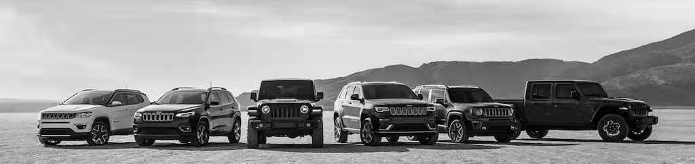

JEEP
Jeep is an American automobile marque, now owned by multi-national corporation Stellantis. Jeep has been part of Chrysler since 1987, when Chrysler acquired the Jeep brand, along with remaining assets, from its previous owner American Motors Corporation (AMC).
Prior to 1940 the term "jeep" had been used as U.S. Army slang for new recruits or vehicles, but the World War II "jeep" that went into production in 1941 specifically tied the name to this light military 4x4, arguably making them the oldest four-wheel drive mass-production vehicles now known as SUVs.
Development - 1. Bantam Reconnaissance Car
When it became clear that the United States would be involved in the European theater of World War II, the Army contacted 135 companies to create working prototypes of a four-wheel drive reconnaissance car. Only two companies responded: American Bantam Car Company and Willys-Overland.
Karl Probst, a talented freelance automotive designer from Detroit hired by American Bantam, drafted the full plans in just two days for the Bantam prototype known as the BRC or Bantam Reconnaissance Car, working up a cost estimate the next day.
Development - 2. Willys and Ford
The Army thought that the Bantam company lacked the production capacity to manufacture and deliver the required number of vehicles, so it supplied the Bantam design to Willys and Ford, and encouraged them to enhance the design.
Willys-Overland's chief engineer Delmar "Barney" Roos modified the design in order to use Willys's heavy but powerful "Go Devil" engine, and won the initial production contract. The Willys version became the standard jeep design, designated the model MB, and was built at their plant in Toledo, Ohio. The familiar pressed-metal Jeep grille was a Ford design feature and incorporated in the final design by the Army.

Because the US War Department required a large number of vehicles in a short time, Willys-Overland granted the US Government a non-exclusive license to allow another company to manufacture vehicles using Willys' specifications. The Army chose Ford as a second supplier, building Jeeps to the Willys' design. Willys supplied Ford with a complete set of plans and specifications. American Bantam, the creator of the first Jeep, built approximately 2,700 of them to the BRC-40 design, but spent the rest of the war building heavy-duty trailers for the Army.
Early military models
| Year | Model | Manufacturer |
|---|---|---|
| 1940 | Bantam Reconnaissance Car | American Bantam Car Company |
| 1941 - 1945 | Model MB | Willys-Overland |
| 1941 - 1945 | Model GPW | Ford |
| 1949 - 1952 | Willys MC / M38 | Willys-Overland |
The Jeep became the primary light 4-wheel-drive vehicle of the United States Armed Forces and the Allies during World War II, as well as the postwar period. Doug Stewart noted:
"The spartan, cramped, and unstintingly functional jeep became the ubiquitous World War II four-wheeled personification of Yankee ingenuity and cocky, can-do determination."
It is the precursor of subsequent generations of military light utility vehicles such as the Humvee, and inspired the creation of civilian analogs such as the original Series I Land Rover. Many Jeep variants serving similar military and civilian roles have since been designed in other nations. Jeep's current product range consists solely of sport utility vehicles—both crossovers and fully off-road worthy SUVs and models.
